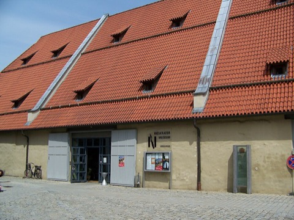
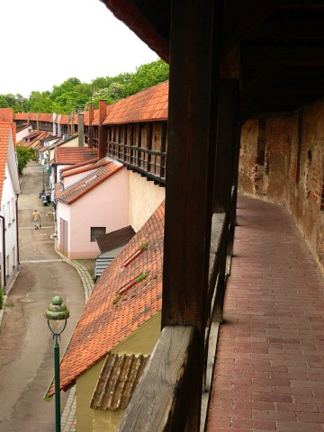
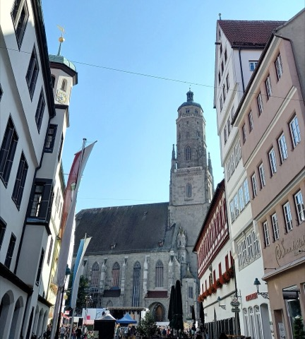
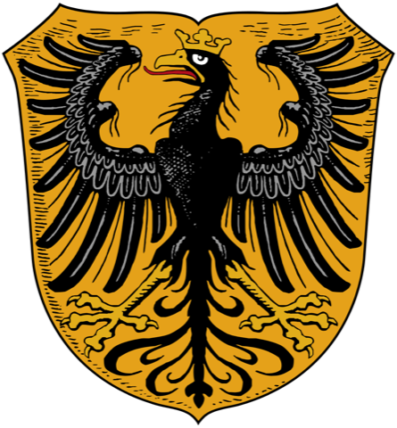

ドイツ旅行 2026
進撃の巨人の街ネルトリンゲンへ朝イチで行き、午後にミュンヘンへ戻ってレジデンツを見る日。列車は DB の時刻表（2026/9/15）で確認した実際の便です。
予約済み・決定済み
- 07:12 ICE 1622（中央駅 20番線）→ Donauwörth 乗換 → 08:38 ネルトリンゲン着に決定。Sparpreis €19.99〜 を DB Navigator で購入
- 帰り 14:21 RE89 直通（乗換なし、2時間2分）→ 16:23 中央駅 16番線。€31.00、D-Ticket なら追加料金なし
- レジデンツは 16:41 到着で最終入場 17:00 に間に合うが、閉館 18:00 まで約1時間20分。宝物館を優先する
- 宿泊：AWA Hotel（中央駅前）
流れ
- 06:50 ホテル発（徒歩5分）→ 07:12 ICE 20番線 → 08:38 ネルトリンゲン着
- 城壁一周 → 10:00 ダニエル塔 → 市街・博物館・昼食
- 14:21 発（直通）→ 16:23 ミュンヘン着 → 16:41 レジデンツ宝物館 → ホーフガルテン → LMUの噴水
今日の出費
- 列車 €19.99（行き・要事前購入）＋ €31.00（帰り・D-Ticket なら無料）
- ダニエル塔 €4.50 · 博物館 €5 · 昼食 €12〜15 · レジデンツ宝物館 €10
- 午後の U-Bahn 単券 2〜3回分（D-Ticket なら不要）
- 1日合計の目安：列車込みで €85〜100
列車と切符
DBの時刻表（2026/9/15）で確認した実際の便です。ネルトリンゲンは10:00まで塔も博物館も開かないので、始発の05:28ではなく 07:12発のICE経由（08:38着）に決定。城壁は終日開放なので、着いてすぐ壁を一周し、10:00ちょうどにダニエル塔へ。
| 便 | ミュンヘン中央駅 発 | 乗換 | ネルトリンゲン 着 | 料金の目安 | 評価 |
|---|
| 始発 | 05:28 RE80 · 17番線 | Donauwörth 06:56着 → 07:10 RB89（14分） | 07:41 | €40.40（普通運賃） | ホテル発4:35。到着後2時間なにも開いていない |
| 決定 | 07:12 ICE 1622 · 20番線 | Donauwörth 08:06着 3番線 → 08:12 RB89 6番線（6分） | 08:38 | €19.99〜（Sparpreis、要事前購入） | 最速1h26。乗換6分なので降りたらすぐ隣ホームへ |
| 予備 | 07:36 RE80 | Donauwörth → RE89 | 09:32 | €40.40 / D-Ticket可 | 普通列車のみ。ICEに乗り遅れたらこれ |
| 帰り | ネルトリンゲン 発 | 乗換 | ミュンヘン 着 | 料金の目安 | 評価 |
|---|
| 別案 | 13:21 RB89 · 1番線 | Donauwörth 13:51着 → 14:15 ICE 1185（24分） | 15:05 | €35.99〜 | レジデンツを2時間半見たい場合はこちら。ネルトリンゲンは1時間短くなる |
| 決定 | 14:21 RE89 直通 · 1番線 | なし | 16:23 | バイエルンチケット €34 / D-Ticket可 | 乗換なし。D-Ticket 可。16:41 レジデンツ着で最終入場の19分前。宝物館なら足りる |
| 遅め | 15:21 RB89 | Donauwörth → Augsburg → ICE | 17:16 | €24.99〜 | レジデンツを諦める場合 |
切符の買い方 行きの07:12はICE区間があるのでバイエルンチケット・D-Ticketは使えず、Sparpreis（列車指定の割引運賃）を 今すぐDB Navigatorで購入するのが最安（€19.99は残席で上がる）。帰りの 14:21 RE89 は普通列車なので D-Ticket で乗れる（なければ €31、当日購入可）。行きだけ買うなら約€20。
ホテルは中央駅前なので朝の移動は徒歩5分、切符不要。午後の U-Bahn（中央駅 ⇄ オデオン広場 ⇄ 大学）用に MVV の単券か1日券（ゾーンM、約€9.20）。
別案：ドイツチケット（D-Ticket）€63/月。全国の普通列車と市内交通が9/30まで乗り放題で、時間制限なし。これなら行きは07:36のRE（09:32着）、帰りは14:21直通が追加料金なし。さらにミュンヘンU-Bahn全日程、9/16〜20のベルリン市内、9/23ハイデルベルク→ローテンブルク、9/24ローテンブルク→ミュンヘン空港の普通列車がすべて含まれるので、旅全体で見るとかなり得。DB Navigatorから海外カードで購入でき、10/10までに解約すれば10月分は請求されない。
DBの運行情報（9/12時点）：Donauwörth〜Aalen間の RE89/RB89 に「天候による徐行で遅延の可能性」の注意が出ています。乗換6分の07:12便は遅延するとRB89を逃す可能性があるので、当日朝にアプリで遅延を確認し、遅れていれば07:36のREに切り替えてください。
- 06:50ホテル発。中央駅南口から大ホールへ入り、20番線へ徒歩5分。駅の売店で朝食を買う
- 07:12ICE 1622 発。車内で朝食。Donauwörth 08:06着、3番線
- 08:126番線から RB89（Aalen方面）。Nördlingen 08:38着、1番線
- 08:45駅を出て北へ徒歩5分、ライムリンガー門（Reimlinger Tor）から城壁へ。ここに街の地図板がある
- 08:50城壁一周（約1時間）。朝は人がいないので壁の上の回廊を独占できる。順路は下の巡礼図
- 09:55聖ゲオルク教会に到着。塔の入口は教会の裏手。10:00開門と同時にダニエル塔へ（€4.50、係員に現金で）。350段、往復と撮影で45分
- 10:50マルクト広場。市庁舎の外階段、タンツハウス、観光案内所（Marktplatz 2）で進撃の巨人関連の案内を尋ねる
- 11:15レプシンガー門の城壁博物館（火〜日 10–13時、13:30–16:30）か、リースクレーター博物館（火〜日 10–16:30、€5）のどちらか一つ。両方なら昼食を短めに
- 12:10昼食。マルクト広場周辺。火曜定休の店があるので候補を2軒
- 14:10駅へ徒歩10分
- 14:21RE89 直通 発（1番線）→ ミュンヘン中央駅 16:23 着（16番線）。乗換なし2時間2分、D-Ticket 可
- 16:33U4/U5 で Odeonsplatz（2駅）。徒歩3分でレジデンツ。16:41 到着、最終入場 17:00 の19分前。列車内でオンライン購入しておく。閉館18:00まで1時間20分なので宝物館（€10）を優先
- 18:00閉館。出口からホーフガルテンへ（24時間・無料）。ディアナ神殿。20分
- 18:25Odeonsplatz から U3/U6 で1駅、Universität の噴水（ハガレン）。15分
- 18:30夕食は大学周辺（シュヴァービング、学生街で安い）か旧市街へ戻る。ホテルへは U3/U6 で Odeonsplatz → U4/U5 で中央駅（合計10分）、または徒歩25分。翌9/16はアリアンツ・アレーナ10:15
ネルトリンゲン 進撃の巨人 巡礼図
諫山創氏は具体的な街を公式に「モデル」と明言してはいませんが、直径約1kmの円形の城壁に囲まれた街並みがウォール内の街そのもので、日本のファンの間で聖地として定着しています。作中との対応は「似ている」というファンの見立てです。
ネルトリンゲン 巡礼の順路街の直径 約1km。隕石クレーターの縁に築かれた円形都市。
- 駅を出て北へ徒歩5分 → ① ライムリンガー門（鷲の紋章、街の地図板あり）から城壁に上がる
- 城壁の回廊を反時計回りに → ② ダイニンガー門（東、堀が残る）
- → ③ レプシンガー門（一番高い門塔＝「壁の門」の構図。城壁博物館 火〜日 10–16:30）
- → ④ バルディンガー門（北西。内側にリースクレーター博物館 火〜日 10–16:30 €5）
- → ⑤ ベルガー門（南西。壁と門が一番絵になる区間）→ ①へ戻る。全長2.7km、約1時間、無料
- 中心へ徒歩5分 → ダニエル塔（10:00開、€4.50、350段）。上から円形の街を俯瞰
- マルクト広場（観光案内所 Marktplatz 2、市庁舎の外階段）→ 昼食 → 駅へ徒歩10分
作中との見立て ファンの比較ポイント
- 塔の上
- 円形の壁に囲まれたオレンジ屋根の街を見下ろす構図が、ウォール・マリア内の街の俯瞰そのもの。定番の比較写真はここ。朝10時なら混まない
- 壁の回廊
- 屋根付きの通路と銃眼。駐屯兵団が壁の上を歩く場面の雰囲気。ベルガー門〜ライムリンガー門の南側区間が一番それらしい
- 門塔
- レプシンガー門の高い塔と門のアーチが「壁の門」の構図。門の外側から壁と塔を一緒に撮る
- 街並み
- マルクト広場周辺の木組みの家と石畳がトロスト区の市街に近い。市庁舎の屋外石段は記念写真スポット
- 豚の伝説
- 1440年、裏切り者が門を開けようとしたのを豚が鳴いて知らせたという伝説。作中で「豚が逃げて門が開いた」ことから物語が動く点と重ねてファンが語る小ネタ
実用メモ ネルトリンゲン
- 塔
- 3〜10月 毎日 10:00–18:00。大人€4.50、15歳以下€3.50。狭い木製螺旋階段なので歩きやすい靴。最上部は塔守が常駐しており、そこで支払う
- 城壁
- 終日開放、無料。5つの門のどこからでも上がれる。回廊は狭く、雨だと滑る
- 観光案内所
- Marktplatz 2。街の地図と、ダニエル塔の夜間登塔（土曜21:30、€8、9/26まで）の情報。進撃の巨人のことは知っているので聞いてみる価値あり
- 火曜の注意
- 博物館は火曜営業。飲食店は火曜定休の店が一部ある
- 荷物
- 塔は階段のみでリュック可。昼食後に駅に戻る動線なので大きな荷物は持ってこない
時間の縛り
07:12のICEは Donauwörth 乗換6分。ダニエル塔は10:00開。帰りの14:21だとレジデンツ到着は 16:41 で、最終入場 17:00 の19分前。閉館18:00まで約1時間20分しかないので、130室の博物館をゆっくり見る時間はない。列車が10分でも遅れると最終入場が危ういので、車内でアプリの遅延を見ておくこと。
乗り換えの詳細
この日は乗り換えが3回。一番タイトなのは行きのドナウヴェルト（6分）。番線は DB の時刻表（2026/9/15）の表示ですが、当日 DB Navigator で再確認してください。
| 時刻 | 駅 | 何をするか | 所要 |
|---|
| 06:50 | AWA Hotel | 南口から中央駅の大ホールへ。案内「Gleis 11–26」。中央駅は改修工事中で通路が変わるので余裕を | 5分 |
| 06:57 | München Hbf 20番線 | ICE 1622 に乗車。2等の号車位置はホームの編成表（Wagenstandsanzeiger）で確認。座席上の表示が空欄なら自由 | — |
| 08:06 | Donauwörth 3番線着 | 降りたらすぐ地下通路へ。6番線の RB89「Aalen Hbf 行き」へ。乗換6分。ICE では降車扉の近くに立って待つ | 3分 |
| 08:12 | Donauwörth 6番線 | RB89 発。2両編成。Nördlingen は5つ目 | — |
| 08:38 | Nördlingen 1番線着 | 駅舎側のホーム。駅を出て Bahnhofstraße を北へ5分でライムリンガー門 | 5分 |
| 14:21 | Nördlingen 1番線 | RE89 直通「München Hbf 行き」。乗換なし、2時間2分、17駅停車。全席自由 | — |
| 16:23 | München Hbf 16番線着 | 地上の大ホール。地下の U4/U5 ホームへ降りる。案内「U4 U5」。工事中で通路が変わるので余裕を | 6分 |
| 16:33 | München Hbf（U） | U4/U5「Arabellapark / Neuperlach 方面」で Odeonsplatz まで2駅 | 4分 |
| 16:38 | Odeonsplatz | 出口「Residenz / Hofgarten」。地上に出ると正面がテアティーナー教会、右手がレジデンツ。入口は Max-Joseph-Platz 側（南へ3分、Residenzstraße 1） | 3分 |
| 16:41 | レジデンツ 入口 | 最終入場 17:00 まで19分の余裕。列車内でオンライン購入しておけば窓口の列を飛ばせる | — |
| 18:20 | Odeonsplatz → Universität | ホーフガルテンを見てから。U3 でも U6 でも可（この区間は共用）。北方向1駅 | 2分 |
| 18:30〜 | Universität → 中央駅 | U3/U6 で Odeonsplatz に戻り、U4/U5「Westendstraße / Laimer Platz 行き」で2駅。または徒歩25分 | 10分 |
ネルトリンゲン 時間割（08:38〜14:21）
帰りを 14:21 にしたので滞在は5時間43分。1時間増えたぶん、城壁を一周したうえで博物館・カフェ・昼食を全部入れられます。店名はすべて地図リンク付きで、9/15（火）の営業状況を調べてあります。
- 08:38ネルトリンゲン駅 着。1番線。駅を出て Bahnhofstraße を北西へ
- 08:45ライムリンガー門（Reimlinger Tor）。駅から一番近い門で、街の地図板がある。ここから城壁へ上がる
- 08:50城壁を反時計回りに一周。全長 約2.6km、屋根付きの回廊、無料。朝は人がほぼいない。門を5つくぐって元の位置へ
- 09:50城壁を降りて中心部へ徒歩5分。マルクト広場
- 10:00ダニエル塔（聖ゲオルク教会） 開門と同時に登る。€4.50、350段、高さ90m。階段の途中と最上部に世界中のファンの落書き。45分
- 10:50マルクト広場に戻る。観光案内所（Marktplatz 2） でお土産（9:00〜18:00）。市庁舎の外階段、タンツハウス。25分
- 11:20リースクレーター博物館

（€5、10:00〜16:30）で隕石と本物の月の石。45分。この券で同日の市立博物館にも入れる
- 12:10Café Altreuter でコーヒーと名物の菓子（8:00〜18:00）。土産の城壁チョコと豚クッキーもここで。25分
- 12:40昼食。Goldener Schlüssel（11:30〜14:00、メイン €12〜15）。60分とれる
- 13:45城壁博物館（レプシンガー門） に寄るか、城壁の好きな区間をもう一度歩く。20分
- 14:10駅へ徒歩10分。Bahnhofstraße を南東へ
- 14:21RE89 直通 発。1番線。ミュンヘン中央駅まで2時間2分、乗換なし
入れ替えるなら レジデンツをゆっくり見たい場合は 13:21 に戻すと 15:30 から2時間半とれます。その代わりネルトリンゲンは1時間短くなり、博物館かカフェのどちらかを削ることになります。
帰りの列車とレジデンツ
14:21 はネルトリンゲンに1時間長くいられて、乗換なしで、D-Ticket があれば追加料金ゼロです。その代わりレジデンツの滞在が2時間半から1時間20分に減ります。
| 便 | ミュンヘン着 | 料金 | ネルトリンゲン滞在 | レジデンツ滞在 |
|---|
14:21 RE89 直通
乗換なし・2時間2分 | 16:23 16番線 | €31.00
D-Ticket 可 | 5時間43分 | 約1時間20分
最終入場の19分前に到着 |
13:21 RB89 → ICE 1185
Donauwörth 乗換24分 | 15:05 12番線 | €35.99〜
ICE のため D-Ticket 不可 | 4時間43分 | 約2時間30分 |
14:21 で行く場合のレジデンツの回り方
16:41 到着、最終入場 17:00、閉館 18:00。使えるのは1時間20分なので、130室ある博物館を全部見るのは無理です。先に優先順位を決めて入ってください。
おすすめ：宝物館だけ Schatzkammer · €10
- 理由
- 10室ほどにまとまっていて 45分〜1時間で見終わる。この時間帯に無理なく収まる唯一の選択
- 見どころ
- バイエルン王冠、聖ゲオルク騎士像（金・エナメル・宝石）、水晶と象牙の細工、歴代の宝冠
- 写真
- フラッシュ・三脚なしで可
- 音声ガイド
- 日本語あり、無料。時間がないぶん使ったほうが効率が良い
欲張る場合：2館セット €15
- 配分
- 宝物館 45分 → 博物館はアンティクヴァリウム（66mのルネサンス大広間）と祖先画廊だけを30分で
- 注意
- 17:45頃から係員が奥の部屋から閉め始める。入ってすぐアンティクヴァリウムへ向かうこと
- 閉鎖中
- 磁器の間（Porzellankammern）は改修で閉鎖中
- 割高感
- 博物館を30分しか見ないなら、€10 の宝物館単独のほうが納得感はある
チケットは列車の中でオンライン購入を レジデンツは公式サイト（residenz-muenchen.de）で買うと窓口の列を飛ばせます。16:41 到着で列に並ぶと最終入場に間に合わない可能性があるので、RE89 の車内で買っておくのが確実です。
18:00 以降も無料で回れるもの レジデンツを出たあと、隣接するホーフガルテン（24時間・無料）、マックス・ヨーゼフ広場の州立歌劇場（SPY×FAMILY、外観）、LMU 大学前の噴水（ハガレン、U3/U6 で1駅）は時間制限なしで見られます。日没は 19:26 なので、18:00〜19:30 をこの3か所に充てるとちょうど良い。
進撃の巨人：落書きとファンノート
ダニエル塔の落書き 塔の階段と最上部
この街で「進撃の巨人」に一番直接つながるのは、ダニエル塔の階段の途中と最上部に世界中のファンが残した落書きです。日本語の「TATAKAE！」やイラスト、各国語のメッセージが壁一面にあります。訪問記では、階段の途中でこれを見つけて驚いたという報告が複数あります。
- 場所
- 教会の裏手が塔の入口。350段の螺旋階段の途中、特に上部の踊り場と、頂上の塔守の部屋の周辺
- ファンノート
- 塔の係員が進撃の巨人ファン用のノートを置いているという訪問記がある。頂上で係員に聞いてみる価値あり（料金を払うのも頂上）
- 撮影
- 塔の内外とも自由。フラッシュの制限なし
- 注意
- 新しく書き足すのは器物損壊。見るだけにしてください
作品と重なる風景 撮るならここ
- 塔の上
- 円形の壁に囲まれたオレンジ屋根の街を見下ろす構図。ウォール内の街の俯瞰そのもの。定番の比較写真はここ
- 城壁の回廊
- 屋根付きの木造通路と銃眼。駐屯兵団が壁の上を歩く場面の雰囲気。ベルガー門〜ライムリンガー門の南側区間が一番それらしい
- 門の外から
- レプシンガー門 の外側から、門塔と城壁を一緒に撮ると「壁の門」の構図になる
- 豚の伝説
- 1440年、裏切り者が門を開けようとしたのを豚が鳴いて知らせて街が救われた伝説。作中で門が開いて物語が動く点と重ねてファンが語る小ネタ。街の土産物の豚モチーフはこれ
- 塔守の声
- 今も毎晩、塔守が「So, G'sell, so（そうだとも、相棒）」と呼ばわる。日中は聞けない
観光スポット（地図リンク付き）
| スポット | 9/15（火） | 料金 | 撮影 | 所要 |
|---|
| 城壁の回廊 
全長 約2.6km、5つの門と11の塔 | 終日開放 | 無料 | 自由 | 一周60分 / 半周30分 |
| ダニエル塔 
聖ゲオルク教会の鐘楼、90m、350段 | 10:00〜18:00 | €4.50（頂上で支払い、現金を用意） | 自由 | 45分 |
聖ゲオルク教会（内部）
後期ゴシックのホール教会 | 開いている（礼拝時を除く） | 無料 | フラッシュなしで可。礼拝中は控える | 15分 |
リースクレーター博物館
Eugene-Shoemaker-Platz 1。本物の月の石 | 10:00〜16:30（月曜休） | €5
同日の市立博物館も込み | 要確認（公式に記載なし。受付で聞く） | 45分 |
城壁博物館（レプシンガー門）
1379年の門塔。城壁の歴史 | 10:00〜13:00 / 13:30〜16:30（月曜休） | €3 前後（要確認） | 要確認 | 30分 |
| マルクト広場・市庁舎 
市庁舎の屋外石段が記念写真の定番 | 終日 | 無料（外観） | 自由 | 15分 |
観光案内所
Marktplatz 2 | 9:00〜18:00 | — | — | 15分 |
食事（9/15 火曜の営業状況）
火曜は定休の店があります。Kleibls am Daniel は月・火が定休なので、この日は入れません。確実なのは朝8時から通しで開く Café Altreuter です。
| 店 | 9/15（火） | 内容 | 撮影 |
|---|
Hotel-Café-Konditorei Altreuter
Marktplatz 11、ダニエル塔のすぐ横 | 毎日 8:00〜18:00 | 老舗のカフェ・菓子店。ケーキとコーヒー、軽食。朝に寄るならここ一択。土産の菓子も買える | 店内は他の客が写らないよう配慮 |
Gasthof Goldener Schlüssel
Augsburger Str. 24 | 11:30〜14:00（昼の部） | 郷土料理のガストホフ。昼食の本命。12時台は混むので12:00に入る。
シュニッツェル €12.90 / シェイフェレ（豚肩ロース）€13.90 / ケーゼシュペッツレ €11.90 / マウルタッシェン €11.90 / スープ €3.90〜4.90 / アイス €4.50〜6.50 | 料理は可。店内は配慮 |
Café Kasarm
An der Reimlinger Mauer 23、城壁沿い | 火曜は 12:00〜18:00（水〜日は9:00から、月曜休） | 城壁のすぐ脇。自家製ケーキと朝食が評判。リース地方のケーキ「Rieser Bauerntorte」。火曜は12時開店なので朝は使えない。ケーキ €4〜5、コーヒー €3〜4 が相場 | 店内は配慮 |
Kleibls Restaurant am Daniel
Hallgasse 15 | 定休（月・火） | 評価の高い地域料理の店。今回は入れない | — |
Cafe momenti
旧市街中心、テラスあり | 要確認 | テラス席のあるカフェ。予備の候補に | 店内は配慮 |
昼食の組み方 12:05 に Goldener Schlüssel（11:30〜14:00）へ行き、13:00 に出て駅へ。これが一番余裕があります。時間が押したら Café Altreuter で軽く済ませるか、駅で食べられるものを買ってください。ドイツの小さな町の飲食店はカード不可の店があるので現金を €30 ほど持っておくこと。
値段のまとめ
確認できた実額です。値段の記載がない店は、2026年のドイツの相場（コーヒー約€3.45、ケーキ約€4.80）を目安として書いています。
| 項目 | 値段 | 備考 |
|---|
| 列車 ミュンヘン→ネルトリンゲン | €19.99〜 | 07:12 ICE 1622 の Sparpreis。早く買うほど安い |
| 列車 ネルトリンゲン→ミュンヘン | €31.00 | 14:21 RE89 直通。D-Ticket なら追加料金なし。往復 約€51 |
| 城壁の回廊 | 無料 | 終日開放 |
| ダニエル塔 | €4.50（15歳以下 €3.50、6歳未満 無料） | 頂上で塔守に支払う。現金を用意 |
| 聖ゲオルク教会 内部 | 無料 | 献金箱あり |
| リースクレーター博物館 | €5（学生 €2） | 同日の市立博物館（Stadtmuseum）の入場も含むので実質お得 |
| 城壁博物館（レプシンガー門） | 要確認 | 公式に料金の記載がない。観光案内所で聞く |
| レジデンツ 宝物館 | €10（2館セット €15） | 18歳以下無料。日本語の音声ガイド無料 |
| 昼食（Goldener Schlüssel） | €12〜15（メイン1品） | 飲み物を入れて €16〜20。ビール0.5L は €4 前後 |
| カフェ（Altreuter / Kasarm） | ケーキ €4〜5、コーヒー €3〜4 | 2026年のドイツの平均。セットで €8 前後 |
| お土産 | €5〜20 | クッキー・チョコは €5〜10、ぬいぐるみやマグは €10〜20 が目安（実額は未確認） |
| トイレ | €0.50〜1 | 駅や一部の施設は有料。小銭を用意 |
この日の現地出費の目安
最低限（塔＋昼食のみ）：約€20 標準（塔＋博物館＋昼食＋カフェ＋土産＋レジデンツ宝物館）：約€50〜60
これに列車代 €51（D-Ticket があれば行きの €19.99 だけ）が加わります。現金は €50〜60 を持っていくと安心です。ダニエル塔は現金のみ、小さな飲食店もカード不可の場合があります。
お土産
Café Altreuter Marktplatz 11 · 毎日 8:00〜18:00
- 名物
- 城壁をかたどったチョコレートと、塔守の呼び声「So G'sell so」の文字が入った豚の形のクッキー。どちらもこの街だけのもの
- 値段
- 公式サイトに商品価格の記載がないため未確認。ドイツの菓子店の相場では、箱入りのクッキーやチョコで €5〜10 程度
- 買い時
- 朝に寄って、帰りに受け取る形でもよい。菓子なので持ち帰りやすい
- 支払い
- カード可否は要確認。現金があると確実
観光案内所 Marktplatz 2 · 火曜 9:00〜18:00
- 品揃え
- ポストカード、豚のぬいぐるみ、マグカップなど街のオリジナル。豚は1440年の伝説にちなんだ街のマスコット
- 値段
- 未確認。ポストカードは €1 前後、ぬいぐるみやマグカップは €10〜20 が一般的な相場
- ついでに
- 街の地図をもらう。進撃の巨人のことを聞いてみてもよい（ファンの訪問には慣れている）
- 売店
- 隕石・クレーター関連の品。この街が1500万年前の隕石孔の中にあるという成り立ちにちなんだもの
- 注意
- 博物館に入らないと売店に行けるかは不明。受付で聞く
進撃の巨人グッズ 現地にはない
ネルトリンゲンに進撃の巨人の公式グッズを売る店はありません。街は作品の「モデルとされている」立場で、公式なタイアップはしていないためです。持ち帰れるのは、塔から撮った写真と、豚のモチーフの土産になります。
公式サイトの確認（9/12 時点）
各施設の公式サイトで休止・改修・臨時休業の有無を確認した結果です。出発直前にもう一度、各リンク先を見てください。
| スポット | 状態 | 内容 |
|---|
| ダニエル塔 | 営業 | 再確認：3〜10月 毎日 10:00–18:00、大人 €4.50・15歳以下 €3.50。2026年の休止案内なし。9/26 まで毎週土曜 21:30 の夜間登塔あり（当日は火曜なので対象外） |
| 城壁の回廊 | 営業 | 2026年の区間閉鎖の案内なし（2025年6〜7月に一部閉鎖があった）。当日、門の掲示を確認 |
| リースクレーター博物館 | 営業 | 火〜日 10:00–16:30、€5（学生 €2）。同日の市立博物館の入場も含む。火曜は営業 |
| 観光案内所 | 営業 | 公式：イースター〜10/31 は月〜木 9:00–18:00。9/15（火）は終日営業。土産物あり |
| Kleibls am Daniel | 休止 | 公式：月・火が定休。9/15（火）は入れない |
| Café Altreuter | 営業 | 公式サイト：Marktplatz 11、毎日 8:00–18:00。朝から開いている唯一の選択肢（一部の情報サイトの「7:00から」は誤り） |
| Café Kasarm | 注意 | An der Reimlinger Mauer 23。火曜のみ 12:00 開店（他の曜日は 9:00）。月曜休 |
| Goldener Schlüssel | 営業 | Augsburger Str. 24、月〜金 11:30–14:00 と 16:00–24:00。昼食可。メイン €11.90〜19.90（シュニッツェル €12.90、シェイフェレ €13.90） |
| レジデンツ（ミュンヘン） | 注意 | 公式：4/1〜10/15 は 9:00–18:00、最終入場 17:00。14:21 の列車だと 16:41 到着で19分前。磁器の間は改修で閉鎖中 |
写真のルール（共通） 教会・レジデンツはいずれも個人利用の撮影可、フラッシュ・三脚・自撮り棒は不可。ミサや礼拝中は撮影も見学も控える。新市庁舎の塔とダニエル塔は撮影自由。
画像の出典
写真はすべて Wikimedia Commons の自由ライセンス作品です。アニメの画面は著作物のため掲載していません。
出典：ネルトリンゲン市 飲食店一覧 · 観光案内所の営業時間 · Kleibls am Daniel · Café Altreuter · Café Kasarm · Goldener Schlüssel · 訪問記（城壁と塔の落書き） · とっておきドイツ観光案内（土産） · DB 時刻表（2026/9/15 検索） · ダニエル塔料金 · リースクレーター博物館 · 城壁博物館 · ComicAddict 進撃の巨人×ネルトリンゲン · レジデンツ公式 · ドイツチケット
.jpg){kind=link}
{kind=link}
{kind=link}
{kind=link}